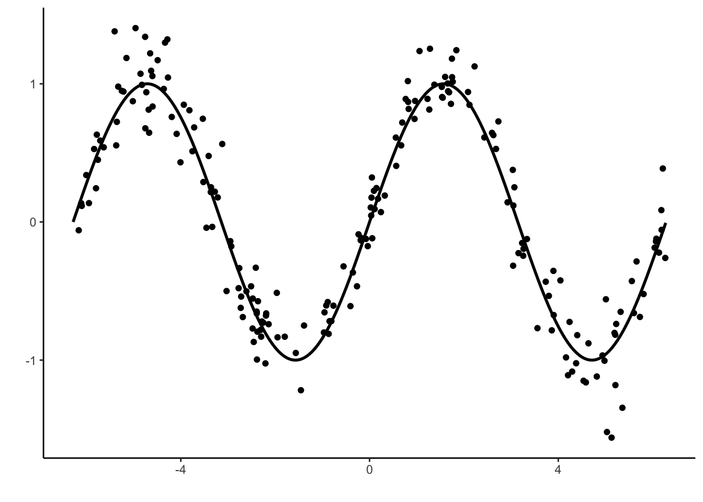

Chapitre 5 Agrégation : forêts aléatoires et gradient boosting
Les méthodes par arbres présentées précédemment sont des algorithmes qui possèdent tout un tas de qualités (facile à mettre en œuvre, interprétable…). Ce sont néanmoins rarement les algorithmes qui se révèlent les plus performants. Les méthodes d’agrégation d’arbres présentées dans cette partie sont souvent beaucoup plus pertinentes, notamment en terme de qualité de prédiction. Elles consistent à construire un très grand nombre d’arbres “simples” : \(g_1,\dots,g_B\) et à les agréger en faisant la moyenne : \[\frac{1}{B}\sum_{k=1}^Bg_k(x).\] Les forêts aléatoires (Breiman 2001) et le gradient boosting (Friedman 2001) utilisent ce procédé d’agrégation.
5.1 Forêts aléatoires
L’algorithme des forêts aléatoires consiste à construire des arbres sur des échantillons bootstrap et à les agréger. Il peut s’écrire de la façon suivante :
Entrées :
- \(x\in\mathbb R^d\) l’observation à prévoir, \(\mathcal D_n\) l’échantillon ;
- \(B\) nombre d’arbres ; \(n_{max}\) nombre max d’observations par nœud
- \(m\in\{1,\dots,d\}\) le nombre de variables candidates pour découper un nœud.
Algorithme : pour \(k=1,\dots,B\) :
- Tirer un échantillon bootstrap dans \(\mathcal D_n\)
- Construire un arbre CART sur cet échantillon bootstrap, chaque coupure est sélectionnée en minimisant la fonction de coût de CART sur un ensemble de \(m\) variables choisies au hasard parmi les \(d\). On note \(T(.,\theta_k,\mathcal D_n)\) l’arbre construit.
Sortie : l’estimateur \(T_B(x)=\frac{1}{B}\sum_{k=1}^BT(x,\theta_k,\mathcal D_n)\).
Cet algorithme peut être utilisé sur R avec la fonction randomForest du package randomForest. Nous la présentons à travers l’exemple du jeu de données spam du package kernlab.
Le problème est d’expliquer la variable binaire type par les autres.
A l’aide de la fonction randomForest du package randomForest, ajuster une forêt aléatoire pour répondre au problème posé.
On commence par charger le package
Et on construit la forêt avec randomForest :
Appliquer la fonction plot à l’objet construit avec randomForest et expliquer le graphe obtenu. A quoi peut servir ce graphe en pratique ?

Ce graphe permet de visualiser l’erreur de classication ainsi que les taux de faux positifs et faux négatifs calculés par Out Of Bag en fonction du nombre d’arbres de la forêt. Ce graphe peut être utilisé pour voir si l’algorithme a bien “convergé”. Si ce n’est pas le cas, il faut construire une forêt avec plus d’abres.
Construire la forêt avec mtry=1 et comparer ses performances avec celle construite précédemment.
rf2 <- randomForest(type~.,data=spam,mtry=1) rf1 Call: randomForest(formula = type ~ ., data = spam) Type of random forest: classification Number of trees: 500 No. of variables tried at each split: 7 OOB estimate of error rate: 4.56% Confusion matrix: nonspam spam class.error nonspam 2711 77 0.02761836 spam 133 1680 0.07335907 rf2 Call: randomForest(formula = type ~ ., data = spam, mtry = 1) Type of random forest: classification Number of trees: 500 No. of variables tried at each split: 1 OOB estimate of error rate: 7.89% Confusion matrix: nonspam spam class.error nonspam 2729 59 0.02116212 spam 304 1509 0.16767788La forêt
rf1est plus performante en terme d’erreur de classification OOB.Utiliser la fonction train du package caret pour choisir le paramètre mtry dans la grille seq(1,30,by=5).
library(caret) grille.mtry <- data.frame(mtry=seq(1,30,by=5)) ctrl <- trainControl(method="oob") library(doParallel) ## pour paralléliser cl <- makePSOCKcluster(4) registerDoParallel(cl) set.seed(12345) sel.mtry <- train(type~.,data=spam,method="rf",trControl=ctrl,tuneGrid=grille.mtry) on.exit(stopCluster(cl))On choisit
Construire la forêt avec le paramètre mtry sélectionné. Calculer l’importance des variables et représenter ces importance à l’aide d’un diagramme en barres.
rf3 <- randomForest(type~.,data=spam,mtry=unlist(sel.mtry$bestTune),importance=TRUE) Imp <- randomForest::importance(rf3,type=1) %>% as.data.frame() %>% mutate(variable=names(spam)[-58]) %>% arrange(desc(MeanDecreaseAccuracy)) head(Imp) MeanDecreaseAccuracy variable 1 47.58430 charExclamation 2 40.83001 remove 3 40.79968 charDollar 4 40.39225 capitalAve 5 37.18721 free 6 36.17332 eduggplot(Imp) + aes(x=reorder(variable,MeanDecreaseAccuracy),y=MeanDecreaseAccuracy)+geom_bar(stat="identity")+coord_flip()+xlab("")+theme_classic()
La fonction vip du package vip permet de faire le diagramme en barres plus facilement

La fonction ranger du package ranger permet également de calculer des forêts aléatoires. Comparer les temps de calcul de cette fonction avec randomForest
library(ranger) system.time(rf4 <- ranger(type~.,data=spam)) user system elapsed 3.278 0.048 0.642 system.time(rf5 <- randomForest(type~.,data=spam)) user system elapsed 7.955 0.103 8.092Le temps de calcul est plus rapide avec ranger. Ce package permet une implémentation efficace des forêts aléatoires pour des données de grande dimension. on peut touver plus d’information ici.
5.2 Gradient boosting
Les algorithmes de gradient boosting permettent de minimiser des pertes empiriques de la forme \[\frac{1}{n}\sum_{i=1}^n\ell(y_i,f(x_i)).\] où \(\ell:\mathbb R\times\mathbb R\to\mathbb R\) est une fonction de coût convexe en son second argument. Il existe plusieurs type d’algorithmes boosting. Un des plus connus et utilisés a été proposé par Friedman (2001), c’est la version que nous étudions dans cette partie.
Cette approche propose de chercher la meilleure combinaison linéaire d’arbres binaires, c’est-à-dire que l’on recherche \(g(x)=\sum_{m=1}^M\alpha_mh_m(x)\) qui minimise \[\mathcal R_n(g)=\frac{1}{n}\sum_{i=1}^n\ell(y_i,g(x_i)).\] Optimiser sur toutes les combinaisons d’arbres binaires se révélant souvent trop compliqué, Friedman (2001) utilise une descente de gradient pour construire la combinaison d’abres de façon récursive. L’algorithme est le suivant :
Entrées :
- \(d_n=(x_1,y_1),\dots,(x_n,y_n)\) l’échantillon, \(\lambda\) un paramètre de régularisation tel que \(0<\lambda\leq 1\).
- \(M\in\mathbb N\) le nombre d’itérations.
- paramètres de l’arbre (nombre de coupures…)
Itérations :
- Initialisation : \(g_0(.)=\mathop{\mathrm{argmin}}_c \frac{1}{n}\sum_{i=1}^n \ell(y_i,c)\)
- Pour \(m=1\) à \(M\) :
- Calculer l’opposé du gradient \(-\frac{\partial}{\partial g(x_i)}\ell(y_i,g(x_i))\) et l’évaluer aux points \(g_{m-1}(x_i)\) : \[U_i=-\frac{\partial}{\partial g(x_i)}\ell(y_i,g(x_i)) _{\Big |g(x_i)=g_{m-1}(x_i)},\quad i=1,\dots,n.\]
- Ajuster un arbre sur l’échantillon \((x_1,U_1),\dots,(x_n,U_n)\), on le note \(h_m\).
- Mise à jour : \(g_m(x)=g_{m-1}(x)+\lambda h_m(x)\).
Sur R On peut utiliser différents packages pour faire du gradient boosting. Nous utilisons ici le package gbm (Ridgeway 2006).
5.2.1 Un exemple simple en régression
On considère un jeu de données \((x_i,y_i),i=1,\dots,200\) issu d’un modèle de régression \[y_i=m(x_i)+\varepsilon_i\] où la vraie fonction de régression est la fonction sinus (mais on va faire comme si on ne le savait pas).
x <- seq(-2*pi,2*pi,by=0.01)
y <- sin(x)
set.seed(1234)
X <- runif(200,-2*pi,2*pi)
Y <- sin(X)+rnorm(200,sd=0.2)
df1 <- data.frame(X,Y)
df2 <- data.frame(X=x,Y=y)
p1 <- ggplot(df1)+aes(x=X,y=Y)+geom_point()+geom_line(data=df2,size=1)+xlab("")+ylab("")
p1
Rappeler ce que siginifie le \(L_2\)-boosting.
Il s’agit de l’algorithme de gradient boosting présenté ci-dessus appliqué à la fonction de perte \[\ell(y,f(x))=\frac{1}{2}(y-f(x))^2.\]
A l’aide de la fonction gbm du package gbm construire un algorithme de \(L_2\)-boosting. On utilisera 500000 itérations et gardera les autres valeurs par défaut de paramètres.
Visualiser l’estimateur à la première itération. On pourra faire un predict avec l’option
n.trees.prev1 <- predict(L2boost,newdata=df2,n.trees=1) df3 <- df2 %>% rename(vraie=Y) %>% mutate(`M=1`=prev1) df4 <- df3 %>% pivot_longer(-X,names_to="courbes",values_to="prev") ggplot(df4)+aes(x=X,y=prev,color=courbes)+geom_line(size=1)
On remarque que l’estimateur est un arbre avec une seule coupure. On aurait aussi pu utiliser :
Faire de même pour les itérations 1000 et 500000.
prev1000 <- predict(L2boost,newdata=df2,n.trees=1000) prev500000 <- predict(L2boost,newdata=df2,n.trees=500000) df31 <- df3 %>% mutate(`M=1000`=prev1000,`M=500000`=prev500000) df41 <- df31 %>% pivot_longer(-X,names_to="courbes",values_to="prev") ggplot(df41)+aes(x=X,y=prev,color=courbes)+geom_line(size=1)
On surajuste lorsque le nombre d’itérations est trop important.
Sélectionner le nombre d’itérations par la procédure de votre choix.
On propose de faire une validation hold out. C’est assez facile avec gbm il suffit de renseigner l’option
train.fractionde gbm.#parallel:::setDefaultClusterOptions(setup_strategy = "sequential") L2boost.sel <- gbm(Y~.,data=df1,n.trees = 10000,distribution="gaussian", bag.fraction = 1,train.fraction=0.75) gbm.perf(L2boost.sel)
[1] 4787
5.2.2 Adaboost et logitboost pour la classification binaire.
On considère le jeu de données spam du package kernlab.
Exécuter la commande
model_ada1 <- gbm(type~.,data=spam,distribution="adaboost",interaction.depth=2, shrinkage=0.05,n.trees=500)On obtient le message d’erreur suivant :
Proposer une correction permettant de faire fonctionner l’algorithme.
Il est nécessaire que la variable qualitative à expliquer soit codée 0-1 pour adaboost.
Expliciter le modèle ajusté par la commande précédente.
L’algorithme gbm est une descente de gradient qui minimise la fonction de perte \[\frac{1}{n}\sum_{i=1}^n \ell(y_i,g(x_i)).\] Dans le cas de adaboost on utilise la perte exponentielle : \(\ell(y,g(x))=\exp(-yg(x))\).
Effectuer un summary du modèle ajusté. Expliquer la sortie.

var rel.inf charExclamation charExclamation 20.04035224 charDollar charDollar 17.51535261 remove remove 11.51692621 free free 7.49397637 hp hp 6.25654932 capitalLong capitalLong 5.42905223 capitalAve capitalAve 4.69521299 your your 4.23371585 george george 2.50300727 edu edu 2.19692796 our our 1.99655393 money money 1.79063219 email email 1.51773292 capitalTotal capitalTotal 1.43872496 internet internet 1.12579132 receive receive 0.97001932 will will 0.94015881 you you 0.89915372 business business 0.84418397 re re 0.82959153 num1999 num1999 0.80016393 num650 num650 0.79468746 meeting meeting 0.69494729 num000 num000 0.56448978 charRoundbracket charRoundbracket 0.39921437 report report 0.38621968 charSemicolon charSemicolon 0.29835251 credit credit 0.27841575 over over 0.27064075 order order 0.26017226 mail mail 0.22398163 technology technology 0.10340435 hpl hpl 0.10151723 original original 0.09615196 font font 0.09539134 make make 0.08995855 project project 0.07970985 all all 0.05392468 people people 0.05359692 address address 0.04690996 parts parts 0.04260362 conference conference 0.02037549 num85 num85 0.01155488 num3d num3d 0.00000000 addresses addresses 0.00000000 lab lab 0.00000000 labs labs 0.00000000 telnet telnet 0.00000000 num857 num857 0.00000000 data data 0.00000000 num415 num415 0.00000000 pm pm 0.00000000 direct direct 0.00000000 cs cs 0.00000000 table table 0.00000000 charSquarebracket charSquarebracket 0.00000000 charHash charHash 0.00000000On obtient un indicateur qui permet de mesurer l’importance des variable dans la construction de la méthode.
Utiliser la fonction vip du package vip pour retrouver ce sorties.
Sélectionner le nombre d’itérations pour l’algorithme adaboost en faisant de la validation croisée 5 blocs.
model_ada2 <- gbm(type~.,data=spam1,distribution="adaboost",interaction.depth=2,bag.fraction=1,cv.folds = 5,n.trees=500) gbm.perf(model_ada2)[1] 233Faire la même procédure en changeant la valeur du paramètre shrinkage. Interpréter.
model_ada3 <- gbm(type~.,data=spam1,distribution="adaboost",interaction.depth=2,bag.fraction=1,cv.folds = 5,n.trees=500,shrinkage=0.05) gbm.perf(model_ada3)[1] 370model_ada4 <- gbm(type~.,data=spam1,distribution="adaboost",interaction.depth=2,bag.fraction=1,cv.folds = 5,n.trees=500,shrinkage=0.5) gbm.perf(model_ada4)[1] 36Le nombre d’itérations optimal augmente lorsque shrinkage diminue. C’est logique car ce dernier paramètre contrôle la vitesse de descente de gradient : plus il est grand, plus on minimise vite et moins on itère. Il faut néanmoins veiller à ne pas le prendre trop petit pour avoir un estimateur stable. Ici, 0.05 semble être une bonne valeur.
Expliquer la différence entre adaboost et logitboost et précisez comment on peut mettre en œuvre ce dernier algorithme.
La seule différence se situe au niveau de la fonction de perte, adaboost utilise \[\exp(-yg(x))\] tandis que logitboost utilise \[\log(1+\exp(-2yg(x)))\] Avec gbm il faudra utiliser l’option
distribution=“bernoulli”pour faire du logitboost, par exemple :set.seed(4321) logitboost <- gbm(type~.,data=spam1,distribution="bernoulli",interaction.depth=2,bag.fraction=1,cv.folds = 5,n.trees=500,shrinkage=0.4) gbm.perf(logitboost)[1] 288
5.2.3 Exercices
Rappeler la fonction de risque adaboost.
La fonction de perte adaboost est \(\ell(y,f(x))=\exp(-yf(x))\). Le risque est donc \[\mathcal R(f)=\mathbf E[\exp(-Yf(X))].\]
Montrer que le risque est minimum en \[f^\star(x)=\frac{1}{2}\log\frac{\mathbf P(Y=1|X=x)}{\mathbf P(Y=-1|X=x)}.\]
On cherche \(f(x)\) qui minimise \(\mathbf E[\exp(-Yf(X))|X=x]\). On a \[\mathbf E[\exp(-Yf(X))|X=x]=\mathbf P(Y=1|X=x)\exp(-f(x))+\mathbf P(Y=-1|X=x)\exp(f(x)).\] D’où \[\frac{\partial \mathbf E[\exp(-Yf(X))|X=x]}{\partial f(x)}=-\mathbf P(Y=1|X=x)\exp(-f(x))+\mathbf P(Y=-1|X=x)\exp(f(x)).\] La quantité ci-dessus est égale à 0 en \[f^\star(x)=\frac{1}{2}\log\frac{\mathbf P(Y=1|X=x)}{\mathbf P(Y=-1|X=x)}.\]
Mêmes questions pour le risque logitboost.
On cherche ici à minimiser l’opposé de la log-vraisemblance \[-(y\log p(x)+(1-y)\log(1-p(x)))\] avec \[p(x)=\frac{1}{1+\exp(-2f(x))}\quad\text{et}\quad 1-p(x)=\frac{1}{1+\exp(2f(x))}.\] On déduit \[-(y\log p(x)+(1-y)\log(1-p(x)))=\log(1+\exp(-2\tilde yf(x)))\] avec \(\tilde y=2y-1\in\{-1,1\}\). Le risque peut donc s’écrire \[\mathcal R(f)=\log(1+\exp(-2\tilde Yf(X))).\] De plus \[\begin{align*} \mathbf E[\log(1+\exp(-2\tilde Yf(X)))|X=x]= &p(x)\log(1+\exp(-2f(x))) \\ &+(1-p(x))\log(1+\exp(2f(x))). \end{align*}\]
Donc \[\frac{\partial \mathbf E[\log(1+\exp(-2\tilde Yf(X)))|X=x]}{\partial f(x)}=p(x)\frac{-2\exp(-2f(x))}{1+\exp(-2f(x))}+(1-p(x)) \frac{2\exp(2f(x))}{1+\exp(2f(x))}.\] En annulant la dérivée on obtient \[-p(x)\frac{1}{1+\exp(2f(x))}+(1-p(x))\frac{1}{1+\exp(-2f(x))}=0,\] d’où \[\frac{p(x)}{1-p(x)}=\frac{1+\exp(2f(x))}{1+\exp(-2f(x))}=\frac{\exp(2f(x))(1+\exp(2f(x)))}{\exp(2f(x))(1+\exp(-2f(x)))}=\exp(2f(x)).\] Par conséquent \[f^\star(x)=\frac{1}{2}\log\frac{\mathbf P(Y=1|X=x)}{\mathbf P(Y=-1|X=x)}.\]
Références
Breiman, L. 2001. “Random Forests.” Machine Learning 45: 5–32.
Friedman, J. H. 2001. “Greedy Function Approximation: A Gradient Boosting Machine.” Annals of Statistics 29: 1189–1232.
Ridgeway, G. 2006. “Generalized Boosted Models: A Guide to the Gbm Package.”